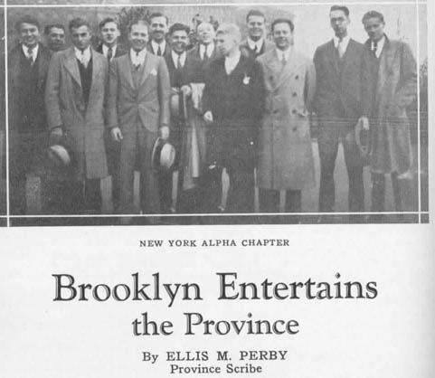

New York Alpha Chapter of Theta Kappa Nu—January 24, 1925— October 11, 1939
(The founding of Theta Kappa Nu fraternity and history of the chapter as New York Alpha of Theta Kappa Nu)
The Founding of Theta Kappa Nu Fraternity
Theta Kappa Nu was formed at a time when the Interfraternity Conference believed that there was a need for more national societies and urged the amalgamation of of various local groups into national fraternities.
Eleven local societies gathered together in 1924 for the first organizational meeting of Theta Kappa Nu. Leaders of the group working for the formation consulted lambda Chi Alpha and adopted many features of that fraternity's organization features and policies. Officers of the two fraternities, which had much in common from the very beginning, remained friends throughout the parallel history of the two societies.
The eleven founding groups, chartered as chapters of Theta Kappa Nu on October 11, 1924 were:
- Phi Alpha Sigma, Drury College
- Tau Lambda Delta, Rollins College
- Kappa Delta Psi, Iowa Wesleyan College
- Phi Sigma, Gettysburg College
- Phi Kappa Nu, Howard College
- Tau Lambda Delta, University of Florida
- Tau Lambda Delta, North Carolina State College
- Tri Kappa, Hanover College
- Sigma Delta Chi, Simpson College
- Phi Beta Omega, Baker University
- Phi Kappa, Oklahoma City University
Theta-Upsilon became the sixteenth chapter of Theta Kappa Nu, on January 24, 1925. We were named new York Alpha chapter of Theta Kappa Nu.
The four men credited with planning and accomplishing the merger of the original eleven societies were:
- Ortho R. McAtee, Drury
- Winslow S. Anderson, Rollins College
- the Rev. Jerry H. ("Doc") Krenmyre, Iowa Wesleyan
- Donald F. Lybarger. Gettysburg College
The fraternity flower, a white Tudor rose, had eleven petals and four stamens, to recognize the eleven local societies and the four "founders."
Here is Theta Kappa Nu's coat of arms.
| The coat of arms was done in the three colors of Theta Kappa Nu: black, silver, and crimson. The shield was silver and contained five black chevrons. A crimson inescutcheon appeared in the center of the shield. A knight's helmet in silver and crimson was above the shield, and above the helmet was a crimson lion rampant with a white tudor rose slipped proper. Below the shield was a silver banner with the fraternity motto "Vir Quisque Vir Est" in crimson. |
Theta Kappa Nu Badge
The Theta Kappa Nu badge consists of four equilateral triangles, signifying the four pilars of Theta Kappa Nu--virtue, learning, patriotism, and fraternity. The three outer triangles are gold with black enamel. The triangles may contain no jewels, four pearls, or two pearls flanked by diamonds in each corner. The triangles contain the letters Theta, Kappa, and Nu, in gold. The central triangle is gold with black enamel. In its center is either a five-petaled gold Tudor rose or a diamond if it is a founders badge. The rose or diamond is surounded by the Syriac numeral for "11," representing the eleven founding chapters of Theta Kappa Nu.
 |
 |
Badge with no jewels and a Tudor rose in the center. | Badge with pearls on the outer triangle and a Tudor rose in the center. The badge pictured belongs to Roger Grice, purchased on eBay. |
 |
 |
Badge with pearls on the outer triangles, a Tudor rose in the center, and a chapter guard indicating an Alpha chapter. | Badge with pearls and diamonds on the outer triangles, a diamond in the center (founders badge), and a double-letter chapter guard. |
 |
 |
Badge with pearls on the outer triangles, a diamond in the center (founders badge), and a chapter guard that appears to be a Gamma. | Badge with pearls and rubies on the outer triangles and a diamond in the center (founders badge). |
Theta Kappa Nu Initiation Certificate
Click here to see a sample initiation certificate.
Theta Kappa Nu Song Book
PDF Version of Individual Songs:
To view the files either click on them and save them to your computer or right click and save them as a target. When saving the file make sure the file extension is .pdf (add .pdf to the end of the file name) otherwise the file may download as a htm and be unviewable
Forward and table of contents
The Love Girl of Theta Kappa Nu
ZAX Session on Theta Kappa Nu
To view the file either click on it and save it to your computer or right click and save it as a target. When saving the file make sure the file extension is .pdf (add .pdf to the end of the file name) otherwise the file may download as a htm and be unviewable
Theta Kappa Nu ritual excerpts.pdf
New York Alpha of Theta Kappa Nu
Theta Lambda became New York Alpha of Theta Kappa Nu on January 24, 1925. Theta Kappa Nu's naming scheme for chapters included the state in which the chapter was located and an indication of the order in which chapters in that state were established. We were the first chapter in new York State, so we were named the New York Alpha Chapter of Theta Kappa Nu Fraternity.
The chapter continued to prosper as Theta Kappa Nu. A house corporation was formed in 1927 under the urging of Campbell, DeGroot, Hotchkiss, and Gerhardt. A system of building fund contributions was initiated in the following year.
The Certificate of Incorporation of New York Alpha Alumni Association of Theta Kappa Nu Fraternity Inc. was signed on January 10th 1927 The Directors were Henry T. Hotchkiss, Harry S. Campbell, Alfred C. Wenzel, George A. Gebhardt, Robert B. Ogden, Arthur W. Bothmann, and Carl H. Nelson
Here is a copy of the original building fund
Some Items from Theta News, Theta Kappa Nu's Journal
October 1926 Theta News of Theta Kappa Nu
Only 22 active brothers had returned to the Chapter for the fall semester.
In this year the alumni chapter is formed. All the men who had gone inactive
planned to benefit greatly from this organization.
Officers elected : Archon: Brother Hofeld; Scribe: Brother Hiscox; Treasurer:
Brother Van Twistern; Oracle: Brother Wahlers; Chaplain: Brother Stedman; Captain
of the Guard: Brother Wright.
December 1926 Theta News of Theta Kappa Nu
In the end of November the chapter was already on the lookout for possible
pledges, though the rush season did not start until the first week of December.
The outlook was very good.
Harrison Webb Theiling ’28 and Charles John Earhart, Jr. ’29 were
just initiated.
Easter 1927 Theta News of Theta Kappa Nu
New York Alpha had a great pledging season. They did not lose a single man
that they wanted. Pledging the house are Philip Brockington, Joseph Brozek,
Edward Edwards, Carl Mobus, Albert Nagy, and Harry Sniffin.
New Officers: Archon: Van Twistern; Scribe: Filsinger; Treasurer: Brown; Oracle:
Ehrhart; Chaplin: Jergen; Captain of the Guard: Stedman.
Spring 1927 Theta News of Theta Kappa Nu
Merit Keys were awarded to 4 brothers: Stan Stedman for his managing of
the basketball team; Bill Hiscox, for holding the same position on the Wrestling
team; Ferdie Wankel, for holding the presidency of the student council; and
Harry Thieling, for organizing the college Orchestra and leading it.
Four new brothers were given the final degree on Friday March 18th 1927: Brothers
Philip Ludwig Brockington, Joseph Ferdinand Brozek, Jr., Alader Wheeler Nagy,
and Harrison Webb Sniffin. There were also two new promising pledges: Briggerman
and Claussen.
October 1927 Theta News of Theta Kappa Nu
New Brothers: John T Bruggerman, Gerord E. Claussen, and Carl E. Moebis,
Jr.
The season began with only 20 active brothers. New Officers are: Archon: Van
Twistern; Treasurer: Browne; Scribe: Mehltretter; Captain of the Guard: Claussen;
Oracle: Stedman; and Chaplain: Bruggerman.
Easter 1928 Theta News of Theta Kappa Nu
Recently initiated brothers were Edward Ousterland and Albert Stiltz.
Spring 1928 Theta News of Theta Kappa Nu
In February several new men became pledges: Herbert Beck, Leonard Evans,
Henry Dudley, Francis Jordan, William Hagenlock, Harry Wilson, Frank Kirby,
Edward Erickson, and Charles Gardner.
The new officers were: Archon: George Olsen; Treasurer, Walwram Browne; Captain
of the Guard: Al Nagy; Scribe: Phillip Brockington; Oracle: Stanley Stedman;
and Chaplain: Gerard Claussen
Fall 1928 Theta News of Theta Kappa Nu
Plans for an early initiation were being considered so that the new term
could start out strong causing a successful pledging campaign.
New officers were: Archon: Walram Brown; Treasurer: Frank J. Mullen; Scribe:
Edmund Osterland; Oracle: A. Wheeler Nagy; Chaplain: Gerald Claussen; Captain
of the Guard: Robert Cochard.
Winter 1928-1929 Theta News of Theta Kappa Nu
Newly initiated brothers are: Francis J. Jordan, Frank E. Kerby, Herbert
W. Beck, William F. Hageloch, Charles G. Gardner, Edward A. Erickson, Henry
A. Dawson, Leonard S. Evans, and Roger W. Hess.
The freshman class was the largest that it had been in a long time and the chapter
hoped for a greater number of prospects.
New Year 1930 Theta News of Theta Kappa Nu
After the Christmas break only 14 active members returned. Immediately
organization had begun to acquire a substantial number pledges from the freshman
class.
At that time they currently already had 10 pledges: Robert J. Garon, James E.
Godfrey, Robert Melrose, Leroy Olsen, Harold Pitbladdo, William F. Schurig,
Irving B. Selmer, Rudolph Valois, Alfred Vollmar, and Francis X. Shea.
Plans were being shaped to have the Province Convention in New York in 1932.
Fall 1931 Theta News of Theta Kappa Nu
Did you know that last season the New York Alpha had two successive presidents
of the student council and were managers of all major sports? Over two-thirds
of the chapter were engaged in major sports.
Winter 1931 Theta News of Theta Kappa Nu
At this time the New York Alpha was the largest fraternity on campus. Even
so, they felt it necessary to secure enough pledges to make up for an unusually
large graduating class.
The Alpha-Beta Province chapter, which was held by the New York Alpha, was agreed
to be a huge success. The convention committee consisted of actives: Charles
Gardner (chairman), George Varga, Bill Schurig, and Henry Wilson, and alumni:
Elles Derby, Harry Campbell, Ed Eveland, and Waltram Browne.
Delegates were quartered at one of Brooklyn’s most exclusive hotels of
the time, the Pierpoint.
A billiard table was added to the house as well as new fixtures in the rooms.
The Chapter planned trips to Eleusis Fraternity at Cornell and to Phi Epsilon
Fraternity at Muehlenburg, both fraternities were to be installed by the New
York Alpha degree team consisting of Howard Amann, Archon; Bill Schurig, Oracle;
Fred Gerkens, Treasurer; Rudy Valois, Chaplain; Ed Hughes, Captain of the Guard.
In 1926 New York Alpha held a party. Here is the picture that appeared in Theta News. Either parties were more formal in those days, or they spend a good deal of effort on "the official photo."
The faculty advisor for New York Alpha
In 1926, Elles M. Derby, ThU 13 started a regularly featured column in Theta
News. Here is the printed announcement from that journal.

In 1931, New York Alpha hosted a Province Grand Chapter (conclave) at the chapter house, 40 Sidney Place. Here is the photo that appeared in Theta News.

Here is a page from the 1931 Polywog showing the members of the chapter.
Fraternities on campus in 1931 were: